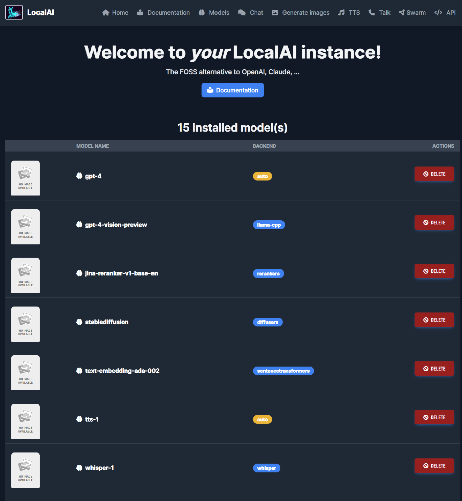
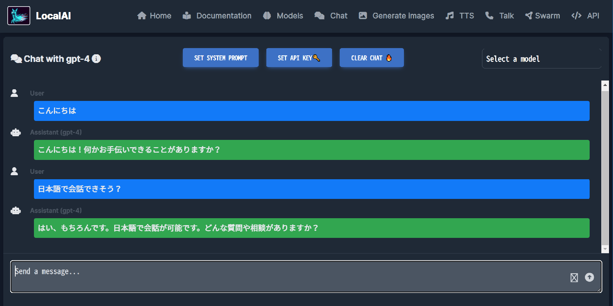
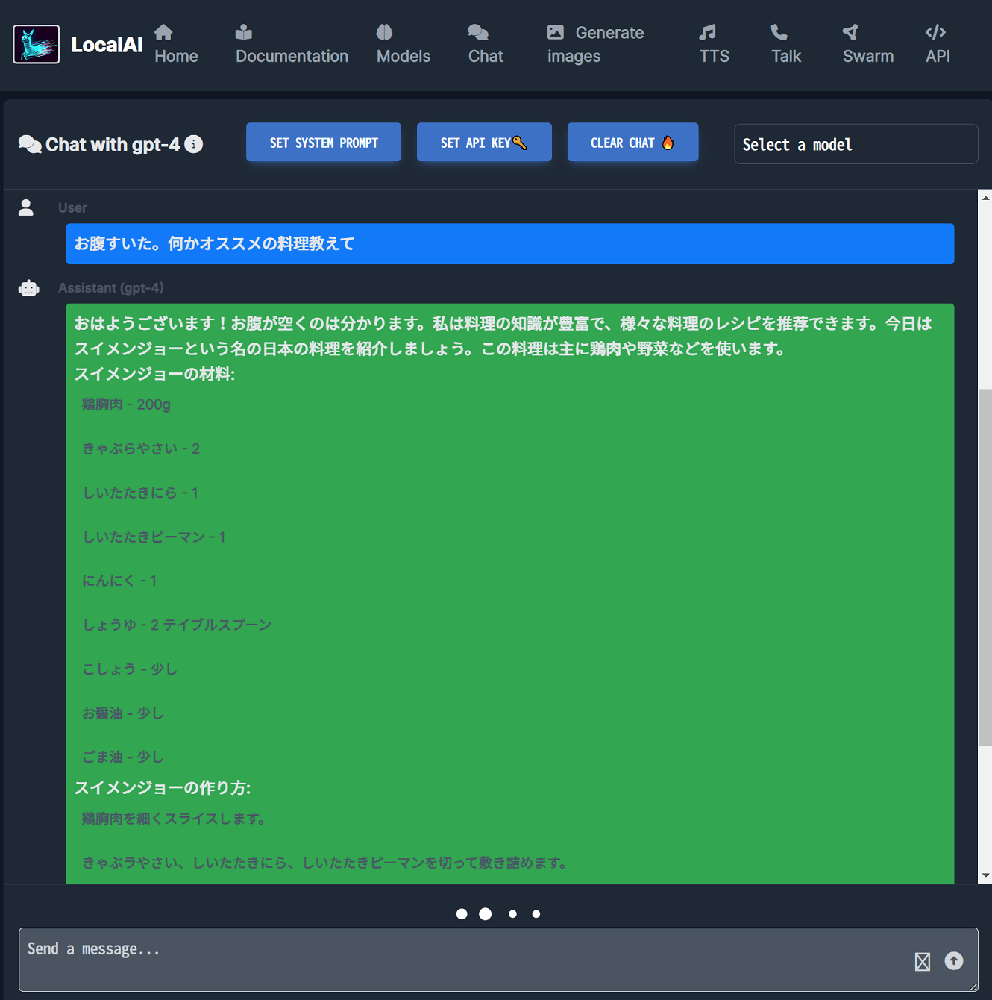

LocalAI を試す
LocalAI という、その名のとおりローカルで動作させられる AI ツールを試してみた。
- Overview | LocalAI documentation
- mudler/LocalAI: :robot: The free, Open Source alternative to OpenAI, Claude and others. Self-hosted and local-first. Drop-in replacement for OpenAI, running on consumer-grade hardware. No GPU required. Runs gguf, transformers, diffusers and many more models architectures. Features: Generate Text, Audio, Video, Images, Voice Cloning, Distributed inference
以下を参考に Docker イメージを選定・セットアップする。
GitBash にて nvcc で Cuda のバージョンを確認。v11.7 だった。
$ nvcc --version
nvcc: NVIDIA (R) Cuda compiler driver
Copyright (c) 2005-2022 NVIDIA Corporation
Built on Tue_May__3_19:00:59_Pacific_Daylight_Time_2022
Cuda compilation tools, release 11.7, V11.7.64
Build cuda_11.7.r11.7/compiler.31294372_0
このあと GitBash (Windows) 側で Docker コンテナの立ち上げを試したのだが、どうもうまくいかず、WSL 側でやり直すことにした。
WSL 側に Cuda Toolkit v11.7 がインストールされていなかったので、以下のページよりバイナリのインストーラを取得してインストールした。
$ wget https://developer.download.nvidia.com/compute/cuda/11.7.0/local_installers/cuda_11.7.0_515.43.04_linux.run
$ sudo sh cuda_11.7.0_515.43.04_linux.run
Please make sure that
- PATH includes /usr/local/cuda-11.7/bin
- LD_LIBRARY_PATH includes /usr/local/cuda-11.7/lib64, or, add /usr/local/cuda-11.7/lib64 to /etc/ld.so.conf and run ldconfig as root
Cuda Toolkit がインストールできると ↑ このようなメッセージが出るので、~/.bashrc にて次のように環境変数を設定する。
# Cuda
export PATH="/usr/local/cuda-11.7/bin:${PATH}"
export LD_LIBRARY_PATH="/usr/local/cuda-11.7/lib64:${LD_LIBRARY_PATH}"
コレで WSL 上でも nvcc コマンドが確認できるはず。
$ nvcc --version
nvcc: NVIDIA (R) Cuda compiler driver
Copyright (c) 2005-2022 NVIDIA Corporation
Built on Tue_May__3_18:49:52_PDT_2022
Cuda compilation tools, release 11.7, V11.7.64
Build cuda_11.7.r11.7/compiler.31294372_0
さて、LocalAI の Docker イメージは「Latest images for Nvidia GPU (CUDA11)」を選んだ。--gpus all で GPU アクセラレーションを有効にする。
$ docker run -p 8080:8080 --gpus all --name local-ai -ti -v "$(pwd)/local-ai-models:/build/models" localai/localai:latest-aio-gpu-nvidia-cuda-11
めちゃくちゃダウンロードに時間がかかる。localai/localai:latest-aio-gpu-nvidia-cuda-11 の Docker イメージサイズは 42.3GB、ボリュームマウントして最初にダウンロードされるモデルのファイルサイズは合計 12GB 程度。かなりストレージを食うので注意。
http://localhost:8080/ にアクセスすると、インストールされた複数のモデルで遊べる。チャット、画像生成、テキスト・トゥ・スピーチなどが利用可能。

ストレージ容量的にかなり盛り盛りにはなるし、そこそこのマシンスペックを求められるが、高精度な ChatGPT もどき、AI 画像生成の簡単なインターフェースが欲しい場合はコレだけで一気に遊べて面白い。


ちなみに、GitBash でのボリュームマウント時にフォルダ名末尾に ;C みたいなのが付いてうまくマウントできない問題があったのだが、MSYS_NO_PATHCONV=1 という環境変数を export するのと、-v $(pwd) と書くところを -v /$(pwd) とダブルスラッシュ始まりで書くことで回避できるようだ。
# GitBash では次のように実行するとボリュームマウントが綺麗に行えた
$ MSYS_NO_PATHCONV=1 docker run -p 8080:8080 --gpus all --name local-ai -ti -v /$(pwd)/local-ai-models:/build/models localai/localai:latest-aio-gpu-nvidia-cuda-11
- 参考 : Mount volume doesn't work on Windows 10 using git-bash · Issue #673 · docker-archive/toolbox
- 参考 : docker runでvolumeにカレントディレクトリを割り当てる記述法(Git Bash for Windows) #Docker - Qiita
- 参考 : docker for windowsをgit bashで使うときの-v(volume)の指定の仕方 #Docker - Qiita
当方環境ではどうもボリュームマウント以外の問題で、一部のモデルデータがダウンロードできなかったりして、結局 GitBash ではなく WSL でやり直した。